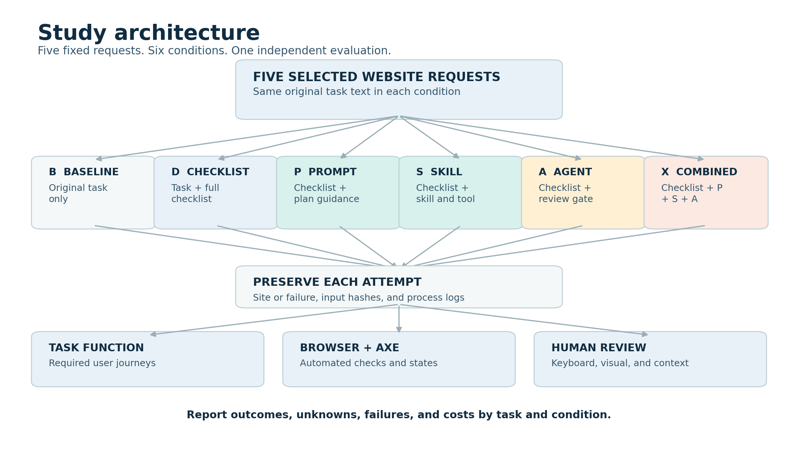
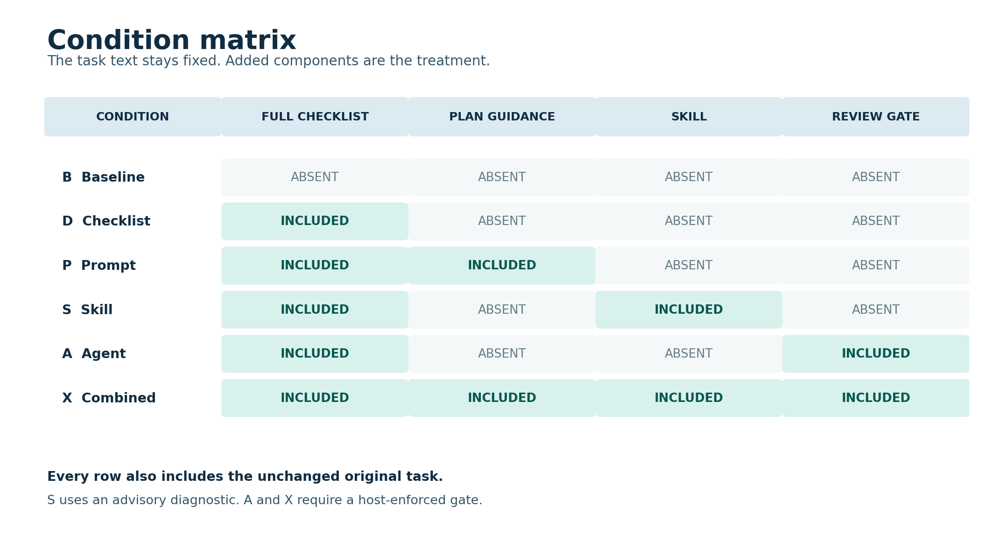
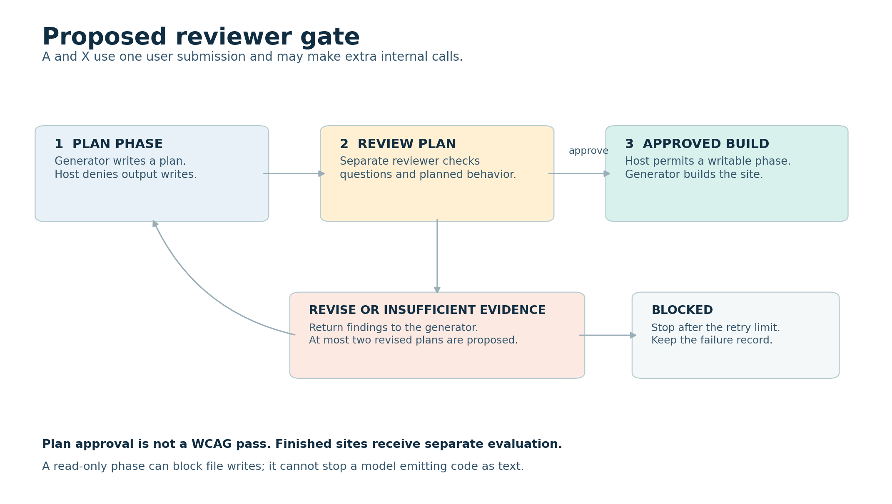

Experiment plan: AI-generated website accessibility
Version: Draft 0.1, 30 October 2026. Status: Proposal for discussion. No benchmark or participant study has run. Language: ASD-STE100-oriented technical English. Formal conformance is not verified.
The original Arena tasks and full checklist retain their existing wording. Their wording has not been checked against the ASD-STE100 dictionary.
1. Purpose and boundaries
This study asks whether specific interventions change accessibility in AI-generated websites. It also measures website function, review behavior, and resource costs. The five chosen requests remain the study tasks. The task text must stay unchanged in every condition. The study adds material in some conditions, so the full model inputs differ.
This is an exploratory study of five selected tasks. It cannot prove that one method is best for all websites or AI systems. The review may find no improvement or a worse result. The team must report those outcomes as well.
Important: The Arena dataset terms require clarification before hosted-model submission or public release of prompt text. See the dataset agreement. No original task text is reproduced in this protocol.

2. Research questions
| ID | Proposed question | Main comparison |
|---|---|---|
| RQ1 | How do the packages affect the selected accessibility and task checks? | Each condition versus baseline B. |
| RQ2 | Does a package add value beyond the full checklist alone? | P, S, A, and X versus D. |
| RQ3 | What costs, failures, and process behaviors accompany each package? | All six conditions. |
| RQ4 | Do model checklist claims agree with independent observations? | D, P, S, A, and X only. |
Proposed directional hypothesis: X improves the task-and-accessibility success rate compared with D. The opposite or no change remains possible. All other comparisons are exploratory in this five-task design. The team must accept the final outcome and analysis plan before study runs.
This experiment does not measure human automation bias. No participant answers questions in the proposed autonomous version. A human-overreliance claim requires a separate participant study.
3. Tasks
| Task | Selected shortlist item | Public description | Design concern |
|---|---|---|---|
| T01 | 7 | Services landing page | The request refers to an order form that was not supplied. |
| T02 | 8 | Consulting landing page | The request already asks for contrast and semantic HTML. |
| T03 | 18 | Cinema listings and ticket selection | Film data and delivery services are not supplied. |
| T04 | 19 | Task dashboard with charts and drag-and-drop | The request needs several interactive functions. |
| T05 | 1 | Personal portfolio | The request is short and leaves features open. |
The selection was purposive. It is not a random sample of website requests. The original first user message is the task input. The task manifest records identifiers and UTF-8 hashes. The exact task input must match its manifest hash at every run.
Before running, define a task contract for each request. Record every required journey, supplied input, external dependency, and allowed fixture. Treat an unavailable required input as unresolved until the team chooses a consistent rule. Do not edit the source task or quietly invent a service.
4. The six proposed conditions
The checklist is the existing 188-item action checklist, version 0.1.0. It has 81 WCAG-derived items, 81 guidance items, and 26 research-process items. The checklist is a research draft; expert review is still needed.
| ID | Generator receives | Extra study mechanism | What the comparison can show |
|---|---|---|---|
| B | Original task only | None. | Baseline for the selected model and runner. |
| D | Original task plus the full checklist and self-report request. | Direct user-message guidance. | Effect of this complete checklist package versus B. |
| P | Same D message. | Persistent plan and question guidance. | Effect of this instruction package versus D. |
| S | Same D message. | Reusable skill and a plan diagnostic. | Effect of this skill package versus D. |
| A | Same D message. | Separate reviewer and host-enforced plan gate. | Effect of this reviewer workflow versus D. |
| X | Same D message. | P, S, and A together. | Effect of this specific combined package versus D. |
The packages change several things at once. The result cannot isolate the value of packaging, extra time, or an individual instruction. The six-arm design also cannot estimate all interactions between P, S, and A. For that question, use all eight P/S/A combinations plus B: nine conditions total.
| Checklist-based factor combination | Present in six-arm proposal? |
|---|---|
| No P, S, or A: D | Yes. |
| P only | Yes. |
| S only | Yes. |
| A only | Yes. |
| P plus S | No. |
| P plus A | No. |
| S plus A | No. |
| P plus S plus A: X | Yes. |
Even the full factorial design needs enough independently sampled tasks for broader inference. Five tasks and three repeats support a limited exploratory comparison.
P has no study-specific host gate. S requests a diagnostic, but the host does not enforce a gate in S. A and X use a host gate only when the runner supports the needed controls. The runner must record actual activation and gate behavior. An instruction file is not automatically a model system-role message.

5. Study size and independence
The initial proposal uses two model-and-runner configurations. Codex and Antigravity are candidates, subject to availability and capability checks. Record the actual model, runner, version, and settings for each run. If a model or setting is hidden, record it as unknown.
The proposed budget is five tasks times two configurations times six conditions times three repeats. That is 180 scheduled generation attempts. This number is a planning example, not a power calculation. The nine-condition extension would require 270 attempts with the same two configurations and three repeats.
At the proposed 20-minute cap, 180 attempts could occupy up to 60 hours of sequential generation time. That limit excludes setup and review. As an illustration, 30 minutes of manual review per artifact would add 90 hours for 180 artifacts. Actual review time and the number of runnable artifacts are unknown. The team should check its budget before freezing the matrix.
One run is a fresh generation attempt for one task, configuration, condition, and repeat. Repeats measure run variation for the same selected tasks. They do not create 180 independent website requests. Results must show each task and configuration separately.
6. SPV question policy
SPV means Socratic Plan Verification in this draft. The autonomous version asks an AI to generate and answer plan questions. For A and X, a separate reviewer inspects the plan before the host permits implementation. This reviewer does not evaluate the finished site for the study outcome.
One-shot means one initial user submission for each run. The agent workflow may make extra internal model calls. Record those calls, all plan revisions, and their costs. An AI answer is not evidence that a human reviewed the plan.

7. Proposed schedule
| Phase | Work | Exit condition |
|---|---|---|
| 0 | Resolve task rights and researcher decisions. | Record authorization or replace the task source. |
| 1 | Write task contracts and assessment checks. | Review and freeze scope, fixture rules, and test specifications. |
| 2 | Build the four intervention packages. | Version each package and validate on separate development fixtures. |
| 3 | Build runners and independent evaluators. | Test adapters, gate failures, evidence capture, and reviewer agreement. |
| 4 | Freeze protocol and schedule. | Store hashes, tool versions, order, and stopping rules. |
| 5 | Execute every scheduled run. | Preserve every artifact or failure record. |
| 6 | Evaluate under masked labels. | Record function, accessibility, missing data, and costs. |
| 7 | Analyze and review release rights. | Publish only permitted material and supported findings. |
Detailed instructions appear in 02-prompt-pack.md, 03-evaluation.md, and 04-build-and-run.md. The source rationale appears in 05-evidence.md.
8. Decisions still required
- Confirm dataset rights and permitted sharing with each service.
- Choose the actual model-and-runner configurations after capability checks.
- Review the full checklist and the task-specific checks with an accessibility specialist.
- Confirm the budget, exact outcome, gate retry limit, and time cap before freezing.
- Decide whether a second independent reviewer and assistive-technology testing are available.
- Decide whether to add the three missing factorial combinations.
- Decide separately whether a human participant study is in scope.
The diagrams and prompts describe a proposed design. They are not evidence of an implemented or validated system.
Candidate intervention prompt pack
Status: Draft 0.1. These instructions have not been tested or frozen. Review them with the team before implementation.
1. Input assembly rules
The original task is stored outside this document. Never change its words, punctuation, or whitespace for one condition. Verify the original UTF-8 bytes against the task manifest before assembly. Do not send the protected task to a hosted service before rights are clear.
For B, send exactly the original task text as the study user message. For D, P, S, A, and X, send the original task followed by the same block below. The separator and block are added bytes. Record both the original task hash and the full assembled-message hash. Use the same checklist file bytes and the same assembly rule in every intervention arm.
The D message is longer than B. Its self-report also requires work that B does not request. Those changes are part of the D package. Do not attribute the full B-to-D difference to the checklist text alone.
The placeholders below describe how the host assembles messages. They are not literal text to send.
<ORIGINAL_TASK_UTF8_BYTES>
--- BEGIN ACCESSIBILITY REQUEST ---
Use the accessibility checklist below while you complete the request above.
Keep all required features from the original request.
Apply each checklist item only when it is relevant to the requested site.
The R items describe possible WCAG outcomes and include conditions and exceptions.
The G items describe guidance and possible techniques.
The P items describe research activities rather than mandatory site features.
Do not claim a check passed unless you have observed supporting evidence.
Do not call a missing requested feature not applicable.
Mark any item you cannot assess as unassessed.
Create an accessibility self-report for all checklist item IDs.
For each R or G item, record pass, fail, not applicable, or unassessed.
For each P item, record research activity and do not call it a site defect.
Give a short reason and evidence for each status.
If your environment cannot create a file, include the report in your response.
The independent study team will review the finished site separately.
--- BEGIN CHECKLIST ---
<EXACT_MASTER_ACTION_CHECKLIST_UTF8_BYTES>
--- END CHECKLIST ---
--- END ACCESSIBILITY REQUEST ---
The pass status for a G item means the suggested technique was used.
It is not a WCAG conformance judgment.
An R-item pass is the model's claim, not an independent result.
The full checklist text may introduce links and research instructions.
The team must review and freeze those bytes before any run.
2. P: prompt-level guidance
Put this text in the runner's persistent project instruction file. Use the runner's supported format and record the actual delivery channel. Do not claim a system role when the runner loads a project file as user context. The P condition has no study-specific tool gate.
An actual API system-role message is a different delivery variant. Record and analyze it separately from a project-file variant. Do not assume those channels have the same instruction priority.
For the current website request, plan accessibility before implementation.
Identify requested features and relevant accessibility risks.
For each risk, ask a short question that can verify the intended behavior.
Answer with a specific implementation plan or mark the answer unknown.
Keep the requested features in the plan.
Apply checklist items only when their conditions apply.
Use the WCAG criterion and its exceptions for requirement decisions.
Guidance is not automatically a mandatory implementation technique.
Implement the website after you record the plan and questions.
Use the tools already available in the runner when needed.
Record checks that you did not perform.
Do not claim the finished site conforms to WCAG without evidence.
Continue without asking a human to answer the plan questions.
The runner may expose the plan in a transcript or a generated report. Record missing plans and any code emitted before the plan. The prompt does not prove that the model complied.
3. S: skill instructions
The future skill directory must be named spv-accessibility.
Its SKILL.md begins with this candidate text.
The Agent Skills specification defines the package format.
---
name: spv-accessibility
description: Plan and check accessibility for a requested website using the supplied checklist and a plan diagnostic.
---
# Website accessibility plan
1. Read the original website request and the supplied checklist.
2. Identify required user journeys and interface features.
3. Identify relevant R items and optional G guidance for those features.
4. Write a plan for keyboard use, names, states, visual presentation, and errors when relevant.
5. Ask a question for each material accessibility risk.
6. Answer each question with a concrete plan or mark it unknown.
7. Call `verify_plan` with the plan when that tool is available.
8. Consider every diagnostic warning before implementation.
9. Keep the user's required features in the implementation.
10. Test observable behavior with available tools.
11. Mark unobserved checklist items as unassessed.
12. Record the diagnostic result and any unresolved risks.
The host may expose verify_plan through a tool adapter.
The diagnostic output is advisory in S.
It must not approve an inaccessible site or enforce a code gate.
Tool availability and actual invocation are measured separately.
If the skill is not invoked, keep the run and record non-activation.
Proposed tool contract
This contract is runner-independent JSON Schema. Each adapter must translate it to the provider's required wrapper. Do not assume all providers accept one wrapper or support skill files.
{
"type": "object",
"additionalProperties": false,
"properties": {
"task_id": {"type": "string", "minLength": 1},
"checklist_version": {"type": "string", "minLength": 1},
"plan_text": {"type": "string", "minLength": 1},
"questions_and_answers": {
"type": "array",
"items": {
"type": "object",
"additionalProperties": false,
"properties": {
"question": {"type": "string"},
"answer": {"type": "string"}
},
"required": ["question", "answer"]
}
}
},
"required": ["task_id", "checklist_version", "plan_text", "questions_and_answers"]
}
The proposed response contract is:
{
"type": "object",
"additionalProperties": false,
"properties": {
"diagnostic_status": {
"type": "string",
"enum": ["WARN", "NO_WARNING", "UNASSESSED"]
},
"warnings": {
"type": "array",
"items": {
"type": "object",
"additionalProperties": false,
"properties": {
"warning_id": {"type": "string"},
"reason": {"type": "string"},
"plan_evidence": {"type": "string"},
"checklist_item_ids": {"type": "array", "items": {"type": "string"}}
},
"required": ["warning_id", "reason", "plan_evidence", "checklist_item_ids"]
}
},
"limitations": {"type": "array", "items": {"type": "string"}}
},
"required": ["diagnostic_status", "warnings", "limitations"]
}
NO_WARNING does not mean the plan or site is approved.
The diagnostic can identify missing keywords or malformed input.
Those signals do not prove a WCAG failure or a correct implementation.
The schemas and provider wrappers still need implementation and validation.
4. A: reviewer agent and host gate
The host creates a fresh generator context and a separate reviewer context. The generator's first phase must have no write access to the output project. The host asks for a plan, not an implementation. The host validates the phase output before the next step.
Plan-phase instruction
This phase prepares a website plan for independent review.
Do not create or modify website files in this phase.
Do not provide implementation code in this phase.
Return the requested plan as a JSON object.
List required features, accessibility risks, questions, and proposed answers.
Identify unknown inputs and service dependencies.
For each applicable risk, cite the relevant checklist item IDs.
Describe planned behavior, not claims about a finished website.
The following plan schema is a starting contract. The host must implement, validate, and version it before the study.
{
"type": "object",
"additionalProperties": false,
"properties": {
"required_features": {"type": "array", "items": {"type": "string"}},
"risks": {
"type": "array",
"items": {
"type": "object",
"additionalProperties": false,
"properties": {
"feature": {"type": "string"},
"question": {"type": "string"},
"planned_answer": {"type": "string"},
"checklist_item_ids": {"type": "array", "items": {"type": "string"}}
},
"required": ["feature", "question", "planned_answer", "checklist_item_ids"]
}
},
"unknowns": {"type": "array", "items": {"type": "string"}}
},
"required": ["required_features", "risks", "unknowns"]
}
The host rejects malformed plan output.
The host also rejects empty required-feature lists and blank plan answers.
An explicit unknown answer is allowed and must be reviewed.
An exposed code block is logged as a plan-phase leak.
Read-only file access cannot prevent a model from emitting code as text.
The host must prevent accepting or applying implementation before approval.
Retain leaked text only in the controlled trace when permitted.
Reviewer instruction
You review a proposed website plan before implementation.
You receive the original request, the checklist, and the generator's plan.
Do not implement the website.
Check that the plan covers required user journeys.
Check whether relevant accessibility risks have concrete planned behaviors.
Use R items as conditional outcomes and G items as optional techniques.
Do not require a particular ARIA attribute when an equivalent valid method exists.
Ask a precise question for each material missing or unclear behavior.
Refer to evidence in the plan for each finding.
Use APPROVE when the plan is sufficiently specific for implementation.
Use REVISE when a material planned behavior is missing or contradictory.
Use INSUFFICIENT_EVIDENCE when the available plan cannot support a decision.
Return the decision and findings in the host's required JSON format.
Do not claim the finished site passes accessibility tests.
Reviewer decision contract
{
"type": "object",
"additionalProperties": false,
"properties": {
"decision": {
"type": "string",
"enum": ["APPROVE", "REVISE", "INSUFFICIENT_EVIDENCE"]
},
"findings": {
"type": "array",
"items": {
"type": "object",
"additionalProperties": false,
"properties": {
"feature": {"type": "string"},
"question": {"type": "string"},
"reason": {"type": "string"},
"plan_evidence": {"type": "string"},
"checklist_item_ids": {"type": "array", "items": {"type": "string"}}
},
"required": ["feature", "question", "reason", "plan_evidence", "checklist_item_ids"]
}
}
},
"required": ["decision", "findings"]
}
APPROVE means approval of a plan for implementation.
It does not mean that an unbuilt website passes WCAG.
The reviewer can approve a plan with an empty findings list.
The host must reject invalid JSON and unsupported decisions.
For REVISE or INSUFFICIENT_EVIDENCE, require at least one actionable finding.
Host continuation after approval
The plan review is APPROVE.
Implement the website using the approved plan and the original request.
Keep all required features.
Complete the requested accessibility self-report.
Record unperformed checks and unknown results.
For REVISE or INSUFFICIENT_EVIDENCE, send the findings back to the generator.
The proposed limit is two revised plans after the first review.
If the third review does not approve, record BLOCKED and stop that attempt.
The generator must not receive a writable build phase when blocked.
Preserve every review, rejection, retry, and error in the run log.
5. X: combined package
Use the same D user message once. Load the P guidance and the S skill. Use the A reviewer and host gate for the plan phase. Do not add a second gate or duplicate the checklist. The host starts the writable build phase only after reviewer approval. Record whether the skill and diagnostic actually ran.
The P instruction to implement after planning is conditional on the host gate in X. The host sends the approval continuation only after approval. The S diagnostic remains advisory; the A reviewer makes the gate decision.
6. Common examples of useful questions
These are examples, not mandatory answers for every website.
| If the feature exists | Plan question | Independent check later |
|---|---|---|
| Expandable navigation | How can a keyboard user open and close it? | Exercise it with keyboard input. |
| Modal dialog | Where does focus go on open and close? | Test focus movement and return. |
| Form validation | How will a user find and understand an error? | Submit invalid data and inspect the result. |
| Drag interaction | How can a user complete the same task without dragging? | Test the intended alternative and its pointer operation. |
| Informative chart | How is the chart's information available in text? | Inspect its accessible alternative in context. |
These examples are design prompts. The task and WCAG criterion determine whether a check applies. The test specification must allow valid alternative implementations.
Evaluation and analysis plan
Status: Draft 0.1. No evaluation has been performed. The numbers below define planned measures, not observed results.
1. Evaluation model
Evaluate the saved artifact after generation stops. The study reviewer must not use the generator's self-report as the answer key. The evaluation has three layers: task function, automated checks, and human review. The researcher plans to conduct the human review. Record their training and experience without claiming expert status by default.
Use WCAG 2.2 A and AA as the requirement reference. Use the WCAG evaluation methodology to guide scope, sampling, and reporting. The methodology is a W3C Group Note. This planned study is a scoped evaluation, not a claim of full WCAG conformance.
2. Define the test unit
An accessibility test record has these fields:
- Run ID and task ID.
- Requirement or guidance ID and version.
- Page, component, and interaction state.
- Intended behavior, applicability rule, and procedure.
- Result, evidence, reviewer, and test tool version.
Use five outcome labels: PASS, FAIL, NOT_APPLICABLE, UNASSESSABLE, and NOT_TESTED.
Explain every label with a short reason.
Use NOT_APPLICABLE only when the criterion truly does not apply.
A required feature that is missing is a task failure.
Record dependent accessibility tests as unassessable where necessary.
Do not count optional guidance failures as WCAG violations.
3. Task function
Before generation, write a task contract for each original request. List the minimum required journeys, states, and expected outcomes. Document unresolved dependencies and a consistent fixture policy. Review the contracts against the original text and obtain subject review. Do not specify a visual style or technology that the request does not require.
For each scheduled attempt, record:
- Whether an artifact was returned.
- Whether the preserved artifact can be built and started.
- Whether each required journey completes under the contract.
- Whether a failure came from the artifact, provider, environment, or evaluator.
An approved agent plan without a working artifact is not task completion. A blocked agent attempt is a workflow failure for task-completion reporting. An external infrastructure or evaluation failure is indeterminate. Predefine the classification rules and keep the evidence.
Candidate task-specific concerns
The following are starting points for expert review. They are not the final task contracts or mandatory UI designs.
| Task | Candidate core journey | Candidate accessibility checks |
|---|---|---|
| T01 services | Explore services and the requested navigation. Resolve the unavailable order form. | Keyboard access, names, focus, and expanded-state behavior for controls that exist. |
| T02 consulting | Reach requested page content and any required animation. | Requested contrast and semantic structure; keyboard focus and motion controls where applicable. |
| T03 cinema | Browse listings and complete the specified ticket flow under the frozen fixture rule. | Labels, errors, focus, updates, and selection behavior where applicable. |
| T04 dashboard | Exercise the requested task-management and chart functions. | Keyboard access, a non-dragging pointer alternative, names, and chart information where applicable. |
| T05 portfolio | Navigate the delivered portfolio content. | Page structure, links, names, focus, contrast, and image alternatives where applicable. |
For T04, distinguish keyboard operation from the single-pointer alternative to dragging. WCAG 2.2 criterion 2.5.7 has exceptions that the evaluator must inspect. Do not require a feature simply because it appears in this illustrative table.
4. Common accessibility checks
The team must convert these areas into precise, versioned procedures. Each procedure must state its WCAG criterion and exceptions. Record the routes and interactive states under test.
| Area | Example criterion | Example method |
|---|---|---|
| Page title and language | 2.4.2, 3.1.1 | Inspect the browser title and document language. |
| Structure and relationships | 1.3.1 | Inspect headings, labels, groups, and information relationships. |
| Keyboard and traps | 2.1.1, 2.1.2 | Traverse and operate relevant controls with a keyboard. |
| Focus | 2.4.7, 2.4.11 | Observe focus in relevant states and layouts. |
| Name, role, and value | 4.1.2 | Inspect accessible names and state changes for controls. |
| Contrast | 1.4.3 | Check rendered text colors and applicable exceptions. |
| Reflow | 1.4.10 | Inspect the specified viewport and applicable exceptions. |
| Images and media | 1.1.1 and relevant media criteria | Review alternatives for the content that exists. |
| Form errors | 3.3.1, 3.3.2, 3.3.3 | Submit invalid data and inspect messages and labels. |
| Status messages | 4.1.3 | Inspect relevant dynamic messages and programmatic exposure. |
Do not infer screen-reader announcements from an HTML attribute alone. Record actual assistive-technology tests when the team can perform them. WAI-ARIA Authoring Practices describe patterns; they are not mandatory WCAG text.
Draft test cards
These cards illustrate the level of detail needed before the final test suite is frozen. They still require accessibility review and task-specific state selection.
KBD-01: Keyboard access to a required journey
- Reference: WCAG 2.2, criterion 2.1.1, including its exception.
- Preconditions: The task contract defines the journey and the site starts.
- Steps: Start with keyboard focus on the page. Traverse and operate each required control without a pointer.
- Pass: The user completes the journey with a keyboard when the criterion applies.
- Fail: A required function cannot be operated by keyboard and no exception applies.
- Unassessable: The function is missing or another fault prevents the journey.
- Evidence: Record the route, keys, control, and observed result.
FOCUS-01: Visible keyboard focus
- Reference: WCAG 2.2, criterion 2.4.7.
- Preconditions: A keyboard-operable user interface component exists in a selected state.
- Steps: Move focus to the component with the keyboard. Observe the indicator at the frozen viewport.
- Pass: The keyboard focus indicator is visible for the applicable component.
- Fail: The indicator cannot be seen when it is required.
- Evidence: Record the component, state, browser, and screenshot.
CONTRAST-01: Rendered text contrast
- Reference: WCAG 2.2, criterion 1.4.3, including its exceptions.
- Preconditions: Text exists in a selected page state and its applicable threshold is known.
- Steps: Measure the rendered text and adjacent background. Inspect images, overlays, and gradients when present.
- Pass: Normal text reaches 4.5:1, or large text reaches 3:1, when the criterion applies.
- Fail: The applicable ratio is below the threshold and no exception applies.
- Unassessable: The evaluator cannot determine the relevant rendered colors reliably.
- Evidence: Record text, state, measured ratio, threshold, and method.
DRAG-01: Pointer alternative to dragging
- Reference: WCAG 2.2, criterion 2.5.7, including its exceptions.
- Preconditions: A dragging interaction exists in the task dashboard.
- Steps: Attempt the same function with a single pointer without dragging.
- Pass: An applicable equivalent operation can be completed without dragging.
- Fail: No such operation exists and no criterion exception applies.
- Evidence: Record the operation, alternative, input method, and result.
Do not treat these four examples as the complete primary test set. Each task contract must list the full selected criteria and states. Report the number of WCAG criteria that the final test set does not assess.
Security, privacy, and ethics scope
The main outcome is accessibility and task function. The proposed checks do not measure general website security, privacy, or ethical quality. The OWASP Top 10:2025 is a security risk reference. It does not supply this study's accessibility criteria.
Run generated code in an isolated environment with test data and no production credentials. Restrict network access according to the frozen task contract. Record when that restriction prevents an intended function from being assessed. If the team adds security checks, freeze their procedures and report their results separately. Do not claim that a site is secure because the accessibility checks passed.
5. Playwright and axe-core
Use Playwright to start the artifact and exercise the frozen user journeys. Use the same interaction policy and states across conditions. Use semantic locators when feasible; allow equivalent valid interfaces. Capture the exact failing action and relevant evidence.
Run axe-core on the agreed initial and interactive states.
Pin the browser, Playwright, axe-core, enabled rules, tags, and configuration.
The existing local pilot used axe-core 4.10.3 with target-size disabled.
That historical setting is not a recommendation for the new study.
Decide rule coverage explicitly before the run.
Save raw axe violations, passes, incomplete, and inapplicable results.
Record rule IDs, affected nodes, page state, and axe impact.
Report axe impact counts as critical, serious, moderate, and minor where present.
Keep unknown impact values separate.
Deduplicate repeated observations by a frozen component-and-rule policy.
Retain links to every state where the observation occurred.
An axe impact is the tool's classification. WCAG does not define those four severity grades. If the team adds human severity, define it separately and do not merge the two scales. An automated result can need human confirmation. Zero automated violations do not prove accessibility or conformance.
6. Human review
The researcher reviews the frozen artifact using the written procedures. The review includes keyboard use, focus, rendered contrast, content, and required flows. Review the relevant opened, error, success, and other interaction states. Record browser, operating system, viewport, zoom, and input method. When available, record the screen reader and version for assistive-technology tests.
Mask condition labels and randomize artifact IDs before review where practical. The reviewer must not see the intervention transcript before scoring. Some artifacts can reveal their condition; record any suspected unmasking. Calibrate procedures on separate development fixtures. Do not change the scoring rules after seeing study results.
An independent accessibility specialist or person with relevant lived experience would strengthen review. Record who reviewed each result and which checks they performed. If a second reviewer is available, score a predefined overlap independently. Report exact agreement and, where appropriate, Cohen's kappa. Explain missing labels, low prevalence, and undefined kappa values. Resolve disagreements with a documented adjudication record. A single review is still useful, but does not measure inter-rater reliability.
7. Proposed primary outcome
Scoped demonstrated success is a run with all three conditions:
- A runnable artifact exists.
- Every frozen required task journey passes.
- Every applicable selected primary accessibility check passes independently.
An unknown or untested required check cannot demonstrate success. The primary outcome is not full WCAG conformance. It covers only the specified checks, states, and conditions.
For each condition and configuration, let N be all scheduled attempts.
Let P be demonstrated successes and U be indeterminate attempts.
Report P / N and the uncertainty bound (P + U) / N.
Label P / N as the demonstrated-success rate.
It is a lower bound, not an estimate that all unknowns failed.
Report known workflow failures and accessibility failures separately.
For example, model refusal, gate block, or a broken generated build is not success.
It is not automatically a WCAG violation.
An unrelated provider outage or evaluator defect is indeterminate.
Prespecify the boundary and retain all scheduled attempts in N.
If a known failure and an unrelated unknown occur in one attempt, classify the run as known non-success.
Reserve U for attempts that could have met the full outcome if the unknown were resolved.
When a missing required feature makes a check unassessable, classify task completion as failed.
8. Secondary measures
| Measure | Definition | Important limit |
|---|---|---|
| Required-journey completion | Attempts with every required journey passed / scheduled attempts. | Use bounds for external unknowns. |
| Assessed accessibility failure fraction | FAIL / (PASS + FAIL) over selected applicable criterion-state records. |
Show the denominator and coverage; do not treat unknowns as passes. |
| Assessment coverage | (PASS + FAIL) / (PASS + FAIL + UNASSESSABLE + NOT_TESTED) for expected applicable records. |
Report NOT_APPLICABLE separately. |
| axe findings | Counts by rule and tool impact after stated deduplication. | A finding count is not a count of all barriers. |
| Model false-pass fraction | Independent FAIL among model pass claims with comparable assessed results / comparable model pass claims. |
Exclude and report missing, unassessed, or unmatched records separately. |
| Model false-fail fraction | Independent PASS among model fail claims with comparable assessed results / comparable model fail claims. |
This is a claim-based fraction, not a test's false-positive rate. |
| Skill activation | Runs with observed skill invocation / scheduled S or X attempts. | Unknown activation is not non-activation; show both. |
| Gate outcomes | Counts of approvals, revisions, blocks, invalid responses, and leaks. | Plan approval does not prove site quality. |
| Resources | Wall time, model calls, token counts, cost, and retries. | Report unavailable values; do not infer hidden tokens. |
Checklist item and criterion-state records may not match one-to-one. Before analysis, define a reviewed mapping and a compatible aggregation level. If there is no valid mapping, do not calculate self-report agreement for that item.
9. Analysis and interpretation
Compare X with D as the proposed main contrast. Also show B versus D and each package versus B and D. Use percentage-point differences with actual numerators and denominators. Show results by task and model-runner configuration. Show all failures and individual repeat outcomes. Do not treat repeat number 1 in two conditions as a matched pair by itself.
Do not treat repeats as independent sampled tasks. Do not make a general population claim from five purposively selected requests. With this small design, report descriptive results and limits. Any later inferential model needs a justified sampling plan and power analysis. Do not present an arbitrary composite or a tool score as a universal accessibility percentage.
The five prompts were public before this study. Unknown model training data create a contamination risk. Prompt length, tokens, calls, tools, and time differ between packages. The package comparisons cannot attribute gains to one component alone. Provider updates and hidden settings limit exact reproducibility.
10. Reporting table template
| Task | Model and runner | Condition | Repeats | Demonstrated success | Known non-success | Indeterminate | Evidence |
|---|---|---|---|---|---|---|---|
| T01 | TBD | B | 3 planned | TBD | TBD | TBD | TBD |
| T01 | TBD | D | 3 planned | TBD | TBD | TBD | TBD |
| T01 | TBD | P | 3 planned | TBD | TBD | TBD | TBD |
| T01 | TBD | S | 3 planned | TBD | TBD | TBD | TBD |
| T01 | TBD | A | 3 planned | TBD | TBD | TBD | TBD |
| T01 | TBD | X | 3 planned | TBD | TBD | TBD | TBD |
Replicate this structure for all tasks and configurations. Publish no filled values until the evidence exists and release rights are clear.
Build and execution plan
Status: Draft 0.1. This document does not authorize or start the study runs.
1. Planned components
| Component | Responsibility | Required evidence |
|---|---|---|
| Task registry | Identify each original task without changing its bytes. | Dataset revision, task ID, source ID, original SHA-256, rights decision. |
| Condition registry | Define B, D, P, S, A, and X. | Exact instruction files, checklist version, content hashes. |
| Runner adapter | Start a fresh model-and-runner session for one attempt. | Configuration, visible settings, user-message hash, transcript when permitted. |
| Skill adapter | Load the skill and expose the diagnostic where supported. | Skill hash, invocation, tool input and output, unsupported capabilities. |
| Plan supervisor | Enforce read-only planning and the approved transition for A and X. | State transitions, reviewer decisions, revisions, leaks, stop reason. |
| Artifact store | Preserve the final site and generated reports. | File manifest, hashes, original archive, build logs. |
| Evaluation harness | Run frozen function tests, Playwright, and axe. | Browser and tool versions, routes, states, raw reports, evidence. |
| Human review pack | Present masked artifacts and assessment forms. | Reviewer, procedures, observations, disagreements, evidence. |
| Analysis | Compute fixed summaries from completed records. | Analysis version, denominators, missing-data table, output tables. |
These are planned responsibilities. Existing prototype files must be audited before reuse. Do not describe them as ready merely because they exist.
2. Proposed directory layout
study/
protocol/ Frozen study protocol and registry
interventions/
prompt-guidance/ P instruction and hash
spv-accessibility/ S skill and diagnostic contract
reviewer/ A prompts, schemas, and host rules
combined/ X package manifest
fixtures-dev/ Separate development tasks and known outcomes
evaluator/
task-contracts/ Required journeys and fixture policies
checks/ Accessibility procedures and mappings
playwright/ Browser actions and assertions
axe/ Rule settings and result handling
adapters/ Runner-specific invocation code
analysis/ Frozen metric calculations
private-runs/ Prompts, transcripts, outputs, and reports
public-release/ Only material cleared for release
private-runs/ must be excluded from version control and the public site.
The active repository currently publishes docs/ through GitHub Pages.
Do not place protected prompts or unreviewed outputs in docs/.
Generated sites can contain copied or sensitive source content.
Inspect each artifact before any public release.
3. Build the task contracts
- Read each authorized source task in the controlled local environment.
- List exact task requirements and their acceptance checks.
- Record ambiguous details and unavailable services or source data.
- Define a single fixture or mock policy for each affected task.
- State how the rule is supplied without modifying the original task text.
- Review the contract with an accessibility reviewer.
- Freeze the contract before generation.
For T01, resolve the missing order-form source. For T03, resolve film data and email or QR confirmation. A fake email service cannot prove email delivery. Do not accept a mock as full delivery unless the frozen task contract says so. If a required service cannot be provided consistently, revise the study design before the run.
The evaluator can use fixed data without leaking expected results to the generator. If a generator needs data access, provide the same documented resource to every condition. Record differences that a runner cannot control.
4. Build and check the interventions
Implement the candidate prompts from 02-prompt-pack.md. Keep the full checklist unchanged across D, P, S, A, and X. Use the same original task in every arm. Hash the checklist, prompt files, skill, schemas, and supervisor version.
For P, log the effective instruction delivery and any code before the plan. Do not add a host gate in P.
For S, validate the skill metadata against the published format. Use provider-specific wrappers for the common tool contract. Test the actual tool invocation and its unsupported-capability path. Test valid plans that use native HTML without unnecessary ARIA. Treat diagnostics as prompts for review, not as conformance decisions.
For A and X, implement the supervisor as a small state machine:
START -> PLAN_READ_ONLY -> REVIEW -> APPROVED -> BUILD_WRITABLE -> COMPLETE
|
+-> REVISE -> PLAN_READ_ONLY
+-> INSUFFICIENT_EVIDENCE -> PLAN_READ_ONLY
+-> INVALID -> STOP OR RETRY UNDER FROZEN POLICY
+-> RETRY_LIMIT -> BLOCKED
The proposed limit is two plan revisions after the initial plan.
The host checks the review response against the frozen schema.
Only APPROVE permits the writable phase.
Do not mount the writable output project in the plan phase.
Use a temporary read-only environment and prevent pre-approval artifact acceptance.
If a platform cannot enforce this boundary, mark A and X unsupported there.
Do not rename an advisory prompt as an enforced gate.
Develop representative fixtures outside the five study tasks. Include missing keyboard operation, contradictory state handling, and valid native controls. Label the expected plan outcomes with expert review. Test malformed responses, extra fields, retries, timeouts, bypass attempts, and write denial. Record confusion counts for reviewer decisions on the labeled fixtures. Precision and recall need both positive and negative cases. Report undefined values when a denominator is zero. Fixture performance does not establish website accessibility.
5. Build the independent evaluator
Write a separate evaluation procedure for each primary check. Each procedure needs an ID, WCAG source, preconditions, steps, expected outcome, and exceptions. Use frozen state-entry steps and expected outcomes. Include positive and negative evaluator fixtures where technically feasible. Validate that a test does not pass merely because a required feature is absent. Review false positives and false negatives with an accessibility specialist.
Use Playwright for browser actions and task journeys. Use axe-core for the frozen automated rule set. Keep a manual assessment form for checks that need judgment. Add assistive-technology checks if the team has the required skills and tools. Record the checks that the available team cannot assess. Freeze the evaluator before comparative generation. Keep evaluator code and hidden expected outcomes outside generator workspaces.
The existing checklist is a shared knowledge reference in the intervention arms. It is not a replacement for separate test procedures and human observations.
6. Runner compatibility and fairness
Choose specific accessible configurations before scheduling. For each, document model, runner, version, operating system, interface, and execution date. Record native tools and whether the runner can load project instructions, skills, and subagents. Record hidden defaults as unknown. Do not call a runner a model, or assume two runners use the same model.
Give all conditions the same base workspace and native tool permissions. Add only the condition-specific files, tools, and gate. Check parent directories and global configuration for loaded project instructions. Remove unintended study instructions from the baseline when the runner permits it. Keep unavoidable native instructions and record what the runner exposes. For A and X, the read-only plan phase is part of the intervention. If the native runner changes tools, instructions, or UI defaults, record that difference. The interventions use different resources by design. Report time, calls, and cost alongside outcome changes.
The tentative wall-clock limit is 20 minutes per attempt. This is a planning value for review, not a validated fairness threshold. Apply the approved cap to every condition and retain timeouts. Use each provider's supported settings and record them. Do not invent a temperature or model seed when the interface hides it.
7. Freeze and schedule
Before any study attempt, approve and version these items:
- Dataset permissions and task hashes.
- Checklist version and complete assembled input for each condition.
- Task contracts, fixtures, routes, states, and assessment procedures.
- Prompt and skill files, reviewer schemas, and host transition rules.
- Runner versions, model identifiers, settings, time caps, and retry limits.
- Primary outcome, secondary measures, unknown handling, and analysis plan.
- Reviewer masking, review allocation, and release policy.
Use a reproducible schedule randomization seed, proposed 314159.
That seed orders attempts; it does not control model randomness.
Store the schedule, seed, software version, and timestamp.
Interleave conditions within task and runner where the environment allows.
Record outages and provider version changes by date.
Treat earlier experiments or known project outputs as development information. The selected requests are already known to the team and cannot be called a fully blinded holdout. Do not tune interventions on comparative outputs and then present those same outputs as untouched evaluation.
8. Procedure for one scheduled attempt
- Assign a unique run ID and the randomized position.
- Start a clean session and a clean workspace.
- Verify the original task bytes and the condition package hashes.
- Assemble the user message according to the selected condition.
- Apply the scheduled runner configuration and record effective settings.
- Submit the task once; record any internal model calls.
- Apply gate decisions and retry limits when the condition requires them.
- Stop at completion, block, refusal, or timeout.
- Preserve the raw response, generated files, logs, and hashes where permitted.
- Do not repair the artifact before the independent evaluation.
- Create a masked evaluation copy and record its relationship to the original.
If the model provides code in chat, use a frozen extraction rule. Do not fix defects during extraction. Record any changes needed to start an artifact and their justification. If extraction or setup needs a semantic code change, preserve both versions. Report the original as unable to run under the unmodified-artifact rule.
9. Minimal run record
{
"run_id": "T01-R1-B-01",
"task_id": "ARENA_01_SERVICES",
"task_sha256": "record-from-manifest",
"condition": "B",
"repeat": 1,
"model_id": "unknown-until-run",
"runner_id": "unknown-until-run",
"runner_version": "unknown-until-run",
"settings": {"temperature": "unknown", "model_seed": "unknown"},
"user_message_sha256": "not-yet-computed",
"intervention_hashes": [],
"schedule_seed": 314159,
"status": "planned",
"artifact_sha256": null,
"gate_decisions": [],
"skill_activation": "not-applicable",
"start_utc": null,
"end_utc": null,
"token_counts": null,
"cost": null,
"missing_data_reason": null
}
This is an example schema, not a real attempt.
Use null or a defined unknown value for unavailable data.
Add provider, operating system, allowed tools, storage paths, and evaluator versions.
Validate all records against a versioned schema before analysis.
10. Release and audit
Keep raw source text, transcripts, and artifacts in controlled storage. Record rights decisions and a release review for every shared item. Publish the protocol and analysis code when permitted. Publish allowed artifact hashes, test specifications, and results with clear limits. GitHub Pages serves public static content even when its source repository is private. Do not assume a generated dynamic site will work unchanged on Pages. Archive the exact evaluated artifact and document any separate static export.
Any planned participant research needs an independent ethics and consent review where applicable. The current plan contains no human participants in the intervention loop.
Evidence and claim limits
Status: Source-linked rationale for draft protocol 0.1. This is a targeted review, not a systematic literature review. The cited papers do not validate our proposed package.
The keys below are recorded in the project's canonical bibliography.
A portable copy is available in references.bib.
An older entry, mowar2024p052, gives the CodeA11y paper the wrong year.
Use the verified mowar2025codea11y entry for that 2025 paper.
The older bibliography needs a separate audit before use in a paper.
Peer-reviewed research
| Source | Study relevance | Limit for this protocol |
|---|---|---|
gurita2025w4a: Guriţă and Vatavu, W4A 2025 |
Compares accessibility-agnostic and accessibility-oriented UI requests. Uses automated checks, expert review, and model self-reflection. | One banking task and selected criteria cannot establish the effect on our tasks. Expert and automated aggregates moved differently. |
mowar2025codea11y: CodeA11y, CHI 2025 |
Studies an accessibility-aware coding assistant with a developer evaluation. | Its package combines features; it does not isolate our prompt, skill, or gate. |
he2025gena11y: GenA11y, FSE 2025 |
Uses extracted page evidence and detailed prompts for issue detection. | Detection on existing pages differs from generating websites. A reviewer can still be wrong. |
ding2026skillassessment: Ding et al., Findings of EMNLP 2026 |
Reviews skill evaluation, routing, and benchmark coverage. | It does not prove a particular skill improves accessible web generation. |
liu2025projecteval: ProjectEval, Findings of ACL 2025 |
Evaluates generated projects with simulated user interactions. | Its benchmark is not our WCAG evaluation oracle. |
bucinca2021forcing: Buçinca et al., CSCW 2021 |
Studies cognitive forcing in human AI-assisted decisions. | Our autonomous plan review has no human participant and cannot establish reduced human overreliance. |
The prior intervention evidence review gives additional paper-specific details. It also distinguishes peer-reviewed articles, preprints, and vendor reports. The six proposed arms are our design choice, not a published validated protocol.
Standards, specifications, and tool documentation
| Source | Use in this plan | Status |
|---|---|---|
w3c2024wcag22: WCAG 2.2 |
Defines the accessibility criteria and exceptions. | W3C Recommendation. |
w3c2026wcagem2: WCAG-EM 2.0 |
Guides scope, sample, evaluation, and reporting. | W3C Group Note; it does not replace WCAG. |
playwrightaccessibilitydocs: Playwright accessibility testing |
Guides browser-driven accessibility checks. | Tool documentation; not proof of complete coverage. |
dequeaxeapi: axe-core API |
Defines result fields and tool impact labels. | Vendor documentation; impact labels are not WCAG severity grades. |
agentskillsspecification: Agent Skills |
Defines the portable skill package format. | Format specification; provider support still needs verification. |
arena2025webdevdataset: WebDev Arena dataset |
Source of the five researcher-selected requests. | Custom agreement includes transfer restrictions; intended use needs clarification. |
owasp2025top10: OWASP Top 10:2025 |
Reference for a separately scoped security study. | An awareness list is not an accessibility standard or a complete security test. |
asdste100issue9: ASD-STE100 downloads |
Official source for the controlled-language specification. | The full specification and dictionary have not been checked for this draft. |
The official ASD site offers a free copy by request. It warns that plausible AI text may still fail the specification. This draft uses short, active sentences and defined technical terms. It has not passed a formal ASD-STE100 rules and dictionary audit.
What the evidence can and cannot establish
The papers support investigation of requirements, skills, review, and workflow evaluation. They do not establish that every avenue will help. They do not establish that combining all avenues will be best. Our proposed experiment can assess a bounded package comparison if the protocol is followed. Five selected requests cannot prove performance on all web development tasks. Further studies would need broader sampling, independent review, and justified statistical power.